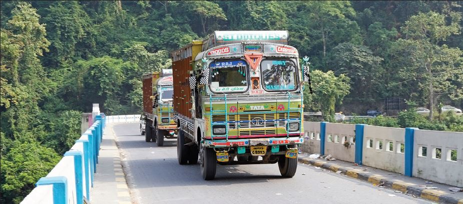

BRING SWAG BACK TO BENGAL: VISION DOCUMENT 2021
Bengal is at a course-altering doorstep of history. After nearly six decades of stagnation, unemployment, man-made famines and food shortages, violent activism, Maoism, Communist repression, crippling trade unionism, vanishing of innovation and industry, cultural morass, massive illegal migration, rise of Islamism, corruption, nepotism and brazen political massacres, the state stands at the door of hope with the key to revival in its hand. By unlocking it, it can unlock its potential to be not just the nation’s brightest star, but also the fulcrum of India’s Look East policy.
How can Bengal show itself the way and lead the rest of the nation again with thoughts, ideas and action? It needs to have an ambitious vision and work persistently, relentlessly towards that goal.
It is time the state starts working on a SWAG model. While we spell out the acronym below, the transformation will require the qualities associated with the word ‘swag’ that youngsters commonly use: A winning attitude, unshakable confidence, and quiet determination.
In Bengal’s context, here is SWAG for you:
• Secure Borders and Bylanes
• Work Culture, Industry, Innovation, Enterprise
• Art and Culture Hub
• Gateway to the East
Now, let us see elaborate on each of the four core ideas, with practical steps for action and implementation.
Secure Borders and Bylanes:
Bengal has seen the bloodiest Partition and post- Partition violence. From Noakhali riots to Direct Action Day to the killing of 3 million Bengalis and rape of 6 million women by the Pakistan Army and its militias, it has been a long era of darkness. Violent Naxalism added to it. Sainbari, Marichjhhapi and Ananda Margi massacres, Nandigram slaughter, and 10 years of killing political opponents under Mamata Banerjee testify to India’s arguably most violent polity.
Through continuous infiltration from Bangladesh, the population of Hindus in the state has dropped by 8% and that of Muslims increased by over 12% at last count. The border is still highly compromised, with smuggling of cattle, human trafficking and entry of terrorist elements happening freely at many points.
To make Bengal secure from external and internal threats, some steps are urgently needed:
• NRC: National Register of Citizens is most needed in Bengal to identify, detain and deport illegals.
• CAA: Hindus who have arrived because of atrocities in Muslim-dominated Bangladesh should be settled under the Citizenship Amendment Act.
• Watertight border: The entire border needs to be fenced and manned by high-end surveillance drones and other equipment with no tolerance towards infiltrators.
• Re-Hinduise the border: The international border, both by circumstances and design, has been de-Hinduised. There is an urgent need to re-Hinduise the border, especially vulnerable places like the Chicken’s Neck, but settling troop families and those naturalised under CAA and other citizenship laws.
• Closer ties with Bangladesh, Myanmar: A stronger mechanism to send back illegals Bangladeshis and Rohingyas and better counterterrorism efforts (handing over their terrorists hiding in India, for instance).
• Overhaul of police force: For political reasons, the police have been packed with elements inimical to the state and the nation. Need to weed out those elements.
• Elimination of criminals: To rid the polity of criminals, a district wise list needs to be drawn, a coordination cell set up, and these criminals must be systematically arrested or neutralised. Those with unpunished crimes must pay.
• Women’s safety: Flying units to be set up to stop sexual harassment on streets, forcible conversions and sexual violence.
• Breaking syndicates: From construction, fisheries, flower trade, filmdom to health and hospitality, visible action to break down the cartels is needed.
• Ban cow slaughter and cattle smuggling.
Work Culture, Industry, Innovation, Enterprise: To bring back industry and innovation to Bengal, the focus will have to be back on the individual. For far long people have been given the worst governance, denied basic health and welfare schemes, told that they can only aspire to serve others as employees, that too largely outside Bengal. They have seen industry after industry shut down, driven away or driven to dust by hostile trade unions. So much so that most Bengali youngsters are even scared to dream that they can create a startup that will be valued at billions some day and employ thousands. The confidence has to be brought back.
Here are some steps which could transform the state:
• Improve human indices: Bring the benefits of every central scheme like Ayushman Bharat to the state. Bengal also has the fewest tap water connections, for instance.
• Special Knowledge Zones: With Bengal’s staggering intellectual capital, it can be the powerhouse for electronic, biomedical, genetics and other patent-oriented research. There should be a concerted effort to set up top-class universities and bring in capital for state-ofthe- art research labs. Draft and implement a policy just to create these knowledge zones.
• Heavy industries belt: The state should create a thriving heavy industries belt from Durgapur to Kalyani, which will then spawn ancillary industries.
• Creative startup hubs: Places like Siliguri or outskirts of Kolkata can see bustling startup zones especially in the creative fields like films, ads, video, audio, design, art, music, newage furniture and food. Offer big tax incentives, cheap spaces to attract talent and investment. There is tremendous potential to develop virtual reality and artificial intelligence hubs in the state.
• Jute revival: Bengal’s once-roaring jute mills can be revived in Hooghly. But more importantly, jute studios that produce eco-friendly and attractive rugs, wall art, mat, stools etc could be set up.
• Bengal’s own biz heroes: The state needs its own Narayana Murthys and Azim Premjis. Contrary to the perception that Bengalis do not make great entrepreneurs, Bengal has seen titans like Dwarakanath Tagore, Ramdulal Sarkar, Amarendu Bose, Purnendu Chatterjee. At least one or two Bengali entrepreneurs should be encouraged to set up mega, modern units for the younger generation to follow. Give special incentives to units that employ more than 1,000 people.
• Break the unions: Bring stricter norms against trade unionism. Also, work covertly to take out the criminal elements in the trade unions.
• Pond, river and sea resource: There is massive potential in fisheries and related products.
• The good earth: Bengal is blessed with extremely fertile alluvial soil. Fruits and vegetables are very flavourful here. It is time to set up cooperatives and develop organic farming, branding Bengal’s produce uniquely.
Art, Culture and Tourism Hub: Bengal has led India in art and culture, but in the last few decades, it rested on past glory and produced its best only erratically, not in a sustained, marketable way. Years of communism and minority votebank appeasement has stopped Bengal from properly showcasing its rich spiritual traditions and culture. It is also a state incredibly gifted by nature. From Sundarbans to Darjeeling, from charming riversides to a breathtaking coastline, it is a tourist’s delight. Here are some steps that can help the state unleash its superpowers in art, culture and tourism.
• One District One Art: Like Uttar Pradesh’s One District One Product, Bengal should identify, develop and link to national and international markets. Silk from Murshidabad, patachitra of Purulia, terracotta art of Bankura, kantha stitch of Birbhum could all be labour- and talentintensive industries branding and selling their ware worldwide. There are many local theatre and dance forms that must be similarly promoted.
• Mishti Bangla: In a state famous for its sweets, certain places are known for their specialities. Sweet hubs can be set up around Kolkata’s roshogolla and mishtidoi, Burdwan’s langcha and mihidana, Krishnanagar’s sharbhaja, Joynagar’s moa, Murshidabad’s kheermohan, Coochbehar’s jalebi or jilipi. These can be marketed nationally and internationally.
• Art districts: Entire art districts can be set up along the Ganges in Kolkata or Darjeeling/ Kalimpong where young and established artists across Bengal, India and the world can put up their work, along with music, wine or teatasting sessions. Shut industrial units along Kolkata’s riverfront can be artistically renovated fusing Bauhaus and local styles to create unique artistic spaces.
• Artistes’ colonies: Bengal should introduce subsidised, low-cost but aesthetically built housing for its artistes. It will go a long way in encouraging talent.
• Heritage district: Parts of old north Kolkata, with its palaces and amazing architecture, to undergo heritage conservation and revival.
• Spiritual tourism: The state should build a Shakti Circuit smoothly connecting Kalighat, Dakshineshwar, Belur Matth, Tarapith, Tarakeshwar, Ramkrishna Paramhans’s birth place Kamarpukur and other such sites. It must also build a Bhakti Circuit connecting Chaitanya Mahaprabhu’sbirthplace Nabadwip, Iskcon and Vedic temple at Mayapur, terracotta temples and ‘gupt Vrindavan’ of Bishnupur, Radha Krishna Mandir and Mira Mandir in Kolkata.
• Writers’ Trail: Create tourist trail touching upon Bishop Lefroy Road in south Kolkata where Satyajit Ray lived for 22 years to Tagore’s abode in Shantiniketan, from Saratchandra Chattopadhyay’s house SaratKuthi in Samta village to Coffee House or a country liquor bar in Khalashitola where the famous authors would congregate for coffee or to get drunk on cheap liquor. All these places can be renovated, made into small museums selling the writers’ works and mementos.
• Forest and sea: Bengal’s forest and sea tourism needs to take a leap with better hotels, adventure activities and access. Helicopter tours over Sundarbans and deep forest stays, elephant trails in Dooars, or trips around shooting locales in Purulia’s forests where Ray, Ritwik Ghatak and Mrinal Sen shot their movies are just some ideas.
• Bankim Museum of Nationalism: India’s biggest and most splendid museum of nationalism should be built in Bengal and named after Bankim Chandra Chattopadhyay, the writer of VandeMataram. The modern, high-tech museum will tell the story of India’s glorious past, its heroes and patriots, its national movements through giant-screen video presentations, light-and-sound shows, artifacts, listening posts, a well-stocked library, regular talks and symposiums.
Gateway to the East:
If Bengal regains its economic and cultural might, it would trigger development in the entire region. It could also become India’s gateway to the East. Transport and communication can not only be strengthened with the neighbouring and nearby states including the Northeast, but lines of trade and communication can be opened to Bangladesh, Myanmar, Nepal, Bhutan, Cambodia, Vietnam, Indonesia, Malaysia right up to China, Korea and Japan. With vision and unwavering commitment to development, Kolkata can in 10-20 years become a world city as influential as Singapore or Hong Kong.
Here are some measures which will help Bengal open up communication, access, transport and trade:
• Access to Northeast: Siliguri should be developed as a full-fledged trade and transit hub for Northeast, Nepal, Bhutan, Bangladesh, Myanmar and China. A bigger airport, more roads and rail links need to be built from Siliguri to all these places. The city must also be developed as a knowledge hub, tapping into the immense talent from the Hills and north Bengal.
• Direct flights: Many more direct flights from Bengal to not just rest of the region but to South East Asia, Middle East and Australia-New Zealand are needed.
• Road to the East: As an answer to China’s OBOR, India should start building a Highway Of Rising Sun (HORS). It will start from Kolkata and wind through friendly countries, connecting as much of south-east Asia as possible.
• Port of call: Besides developing Haldia into a widely connected shallow water port, the Sagar port must emerge as a strong navy port ready to meet any challenge from the eastern front.
• More airports: The state needs development and expansion of three or four more major airports. The Kazi Nazrul Islam airport should be expanded to serve the Durgapur industrial belt better. Balurghat, Malda and Coochbehar airports should be expanded to serve the region better.
• South-North connectivity: A dedicated Kolkata- Siliguri Expressway should be built to cut travel time by more than half.
For most parts, this is a plan for the next 5 to 10 years. Through meticulous planning and dedicated
